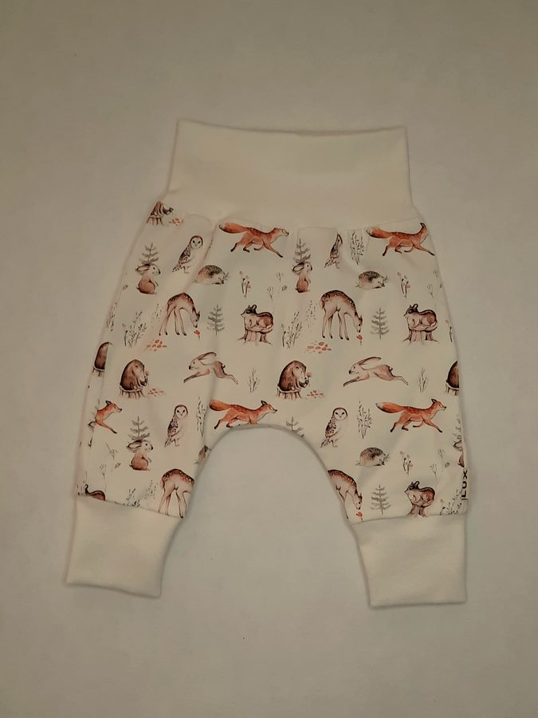
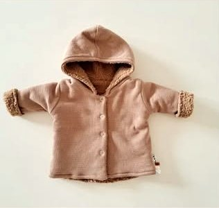
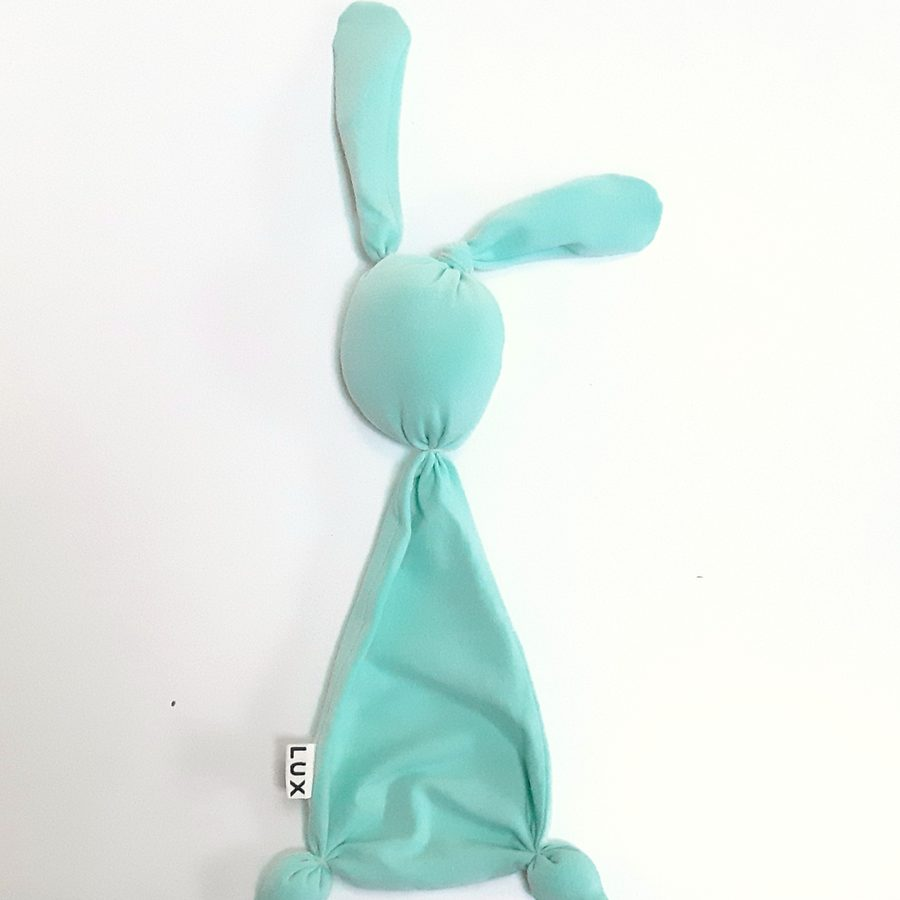

Inspiratie
Gemaakt in het atelier in Ospel
001 — Kleding
Kleding






002 — Knuffels, swaddles en babynest
Knuffels, swaddles en babynest




003 — Siliconen en hangers
Siliconen en hangers


004 — Kraamcadeauboxen
Kraamcadeauboxen


“Elk stuk wordt in het atelier in Ospel genaaid, geborduurd en beletterd. Door dezelfde handen.”
Carien Geurts — Lees het verhaal005 — Contact
Zin om samen
iets moois
te maken?